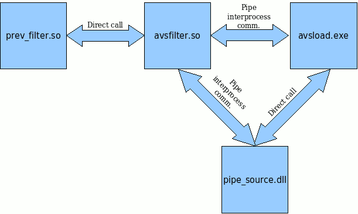
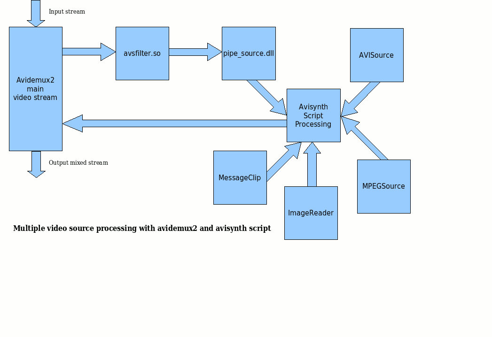

At the stage of video filter initialization, each copy of avsfilter start wine separately with corresponding arguments - path/filename to avsload.exe and script name. Avsload.exe is being started by wine, gets wine path to temporary filenames and generates temporary pipe names. Pipe pathnames are printed to stdout. Avsfilter reads this names, converts wine-like pathnames to Linux-like pathnames, creates fifo's and opens pipe's. Avsload.exe loads avisynth.dll, pipe_source.dll and sends script name to avisynth.dll. Avsfilter sends clip parameters to pipe_source.dll and reads output clip parameters from avisynth.dll/avsload.exe.
Work stageAvsfilter (function getFrameNumberNoAlloc) sends command (via communication pipe) to avsload.exe for getting filtered frame, avsload.exe calls avisynth.dll for getting filtered frame. Pipe_source.dll calls avsfilter for getting source frame (or several frames in the case temporal denoiser/framerate convertor/etc). Avisynth.dll makes frame from filters chain and returns them to avsload.exe Avsload.exe returns frame to avsfilter.
Script modify note
Each avisynth script must be used PipeSorce() instead of AVISource()/MpegSource() etc. It needs for getting frame data from avidemux2/avsfilter to avisynth script entity. You can use several alternate video sources in script with various combination, but use PipeSource() is important. Each alternate video sources must be free from audio part (use AVISource().KillAudio() etc) because AvsFilter is Video Filter. PipeSource() not contain audio part.
Multisource note
Each avisynth script allows to use multiple sources, such as PipeSource() (main avidemux2 stream, which loaded), AVISource(), MPEGSource(), BlankClip(), MessageClip() and so on, load directly from script (these sources need installed directshow codecs, such as ffdshow.exe).
# wine Avisynth_257.exe
Note : To store avsfilter parameters, need applying patch of file "prefs.in" and full recompile of avidemux2 sources. Not patched version of avidemux2 don't store our parameters, and every inserting avsfilter into filter list query pathnames to avsload.exe and avs script. For recompile avidemux2, you must be create new dir for avidemux2 sources, copy avidemux2 sources from original tar.bz2, patching "prefs.in" and start ./configure and so on. Do not reuse already compiled or configured sources, because prefs.h and prefs.cpp not recreate after patching and therefore, unchanged.
Requrements for linux compile [avsfilter.so]:
Requrements for wine part compile [pipe_source.dll, avsload.exe]:
The simplest way to compile this package is:
Unpack filterXXX.tar.bz2 and go to linux directory.
Edit variables RELEASEDIR and AVIDEMUXSRCDIR in Makefile. RELEASEDIR is directory for external avidemux2 filters (usually /home/.../Xfilters), but you can save this filters in any directory. This directory must be set from "Preferences" submenu in avidemux2 to the same (as in Makefile) value. AVIDEMUXSRCDIR is directory with avidemux2 sources. If you are using avidemux2 from rpm/other binary packages, you can install sources of avidemux2 from corresponding srpm.
If you compile avidemux2 from sources, need full recompile avidemux2. Create new directory and copy the avidemux2 sources into this dir. Also copy patch.prefs.in to this dir. Patching prefs.in file by command:
# cd dir_with_avidemux2_src
# patch -p0 < patch.prefs.in
These patch is needed for save avsfilter parameters. Your avsfilter don't store parameters without this patch. Compile avidemux2 (Run configure ; make ; make install , etc) If compile success, you should be change avsfilter Makefile - add -DPREFSINCHANGE to DEFINES var line.
If you use binary avidemux2, avsfilter can't be save avsfilter parameters. Howewer, you can save project in avidemux2 after adds all filters. Project save all filter parameters, and parameters for avsfilter also save and restore to/from projectfile.
Type `make' to compile the package.
You can remove the program binaries and object files from the source code directory by typing `make clean'.
Wine sources are compiled more complex, but overcome. Unpack filterXXX.tar.bz2 and go to win32 directory
Edit variables BIN_PATH and set them to msvc binary path. These directory is containing cl.exe, link.exe and other msvc binary application. I tried to work with msvc 6.0 and other version also must be work.
Edit variables WINE for wine binary pathname (check it with whereis wine command).
Edit variables AVISYNTH_SRCPATH to the root of avisynth sources (contain distrib, filtersdk, src directories).
Edit variables INCLUDE_PATH and LIB_PATH to the msvc include and library.
Type `make' to compile the package.
Copy avsload.exe and pipe_source.dll to wine directory c:\windows\system32 or other directory with wine/windows system dll's. Use winepath for check accessibility of wine pathname :
# winepath -w .winepath return windows-like path/filenames for directory/file
# winepath -w /home/user/.wine/drive_c/wine_app/avsload.exe
You can remove the program binaries and object files from the source code directory by typing `make clean'.
| Latest Linux and Wine application sources | filter.src.05.03.2009.tar.bz2 |
| Latest Wine application binary | avsload_pipe_binary.tar.bz2 |